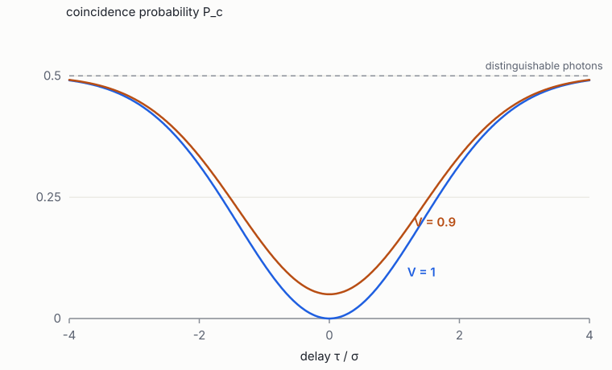
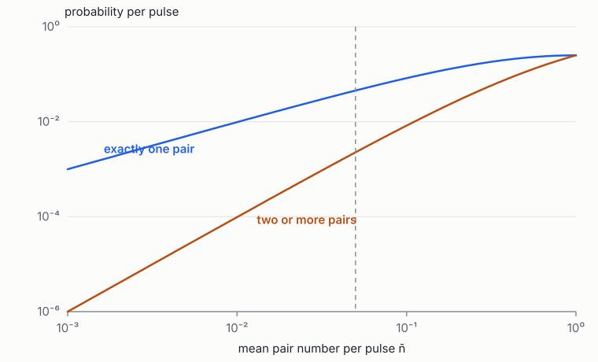

Foundations of Quantum Engineering · Book 5 of 7
Quantum Photonics
The quantised field, states of light, linear optics, light–matter interaction, sources and detectors, integrated photonics and photonic quantum computing
How to use this book
Photons are the natural carriers of quantum information: they travel at the speed of light, barely interact with their environment, and at optical frequencies are quantum even at room temperature. The same weak interaction makes them hard to compute with, because two photons do not naturally affect each other. Quantum photonics is the engineering of that trade-off. It also provides the language for every other platform: a microwave resonator holds photons, a qubit is read out by photons, ions and atoms are controlled with lasers, and the circuit QED of Book 6 is cavity QED transplanted to a chip.
The book has three parts. Chapters 1–2 quantise the electromagnetic field and describe the states of light: Fock, coherent, thermal and squeezed. Chapters 3–5 treat what can be done with photons: linear optics and two-photon interference, interaction with atoms and cavities, and the sources and detectors that make photonic experiments possible. Chapters 6–7 turn to engineering: integrated photonic circuits and their fabrication, and the architectures for photonic quantum computing, where loss replaces decoherence as the central enemy. The last chapter connects directly to the review's section on photonics (Lab to Foundry §8.2).
Prerequisites: Book 2 Chapters 5–7 (Maxwell's equations, resonators, waveguides and interferometers), Book 3 Chapters 4 and 9 (the harmonic oscillator and second quantisation) and Book 4 Chapters 1–2 and 6–7. Standard references are Gerry and Knight [1] and, for photonic quantum computing, Kok et al. [2].
1 Quantising the electromagnetic field
Goals
- Expand the field in a cavity in normal modes and show that each mode is a harmonic oscillator.
- Write the quantised field operator, and compute vacuum fluctuations and the single-photon field strength.
- Extend the picture to travelling modes in waveguides, and state quantum input–output relations.
1.1 Modes are oscillators
Inside a cavity with perfectly conducting walls, Maxwell's equations have discrete solutions, the eigenmodes \(\mathbf u_k(\mathbf r)\) of Book 2 eq. (24), with frequencies \(\omega_k\). Normalise them so that \(\int\varepsilon(\mathbf r)|\mathbf u_k|^2\dd V = 1\), and expand any field configuration in them: \(\mathbf E(\mathbf r,t) = \sum_k q_k(t)\,\omega_k\,\mathbf u_k(\mathbf r)\) up to constants. Substituting into the field energy \(\tfrac12\int(\varepsilon|\mathbf E|^2 + |\mathbf B|^2/\mu)\dd V\) and using orthogonality gives a sum of independent oscillators,
with \(q_k\) related to the electric field amplitude and \(p_k\) to the magnetic one. The electric and magnetic energies play the roles of potential and kinetic energy, exactly as capacitor and inductor did for the LC circuit (Book 2 §1.4). Quantising each oscillator (Book 3 §4) gives
A photon is one quantum of excitation of one mode. "Which mode" is as much a part of a photon's identity as its frequency: a photon in a different spatial mode, polarisation, time bin or frequency band is a different photon and does not interfere with the first. Much of photonic engineering is about making photons occupy exactly the intended mode.
1.2 The field operator and vacuum fluctuations
The electric field becomes an operator,
where \(\mathbf f_k\) is the mode shape normalised to a maximum of one and \(V_k = \int\varepsilon_r|\mathbf f_k|^2\dd V\) is the mode volume. In the vacuum, \(\expval{\hat{\mathbf E}} = 0\) but \(\expval{\hat{\mathbf E}^2}\ne0\): every mode has zero-point fluctuations of amplitude \(\mathcal E_k\). The single-photon field \(\mathcal E_k\) is the key figure of merit for coupling light to matter: an atom or qubit with dipole moment \(d\) couples to the mode with strength \(\hbar g = d\,\mathcal E_k\). Small mode volumes give large fields. A micropillar cavity with \(V\sim\lambda^3\) at 900 nm has \(\mathcal E\sim10^4\) V/m. A superconducting coplanar resonator at 5 GHz has a single-photon voltage of about a microvolt across a gap of about 10 µm, a field of only 0.1 V/m. Circuit QED nevertheless reaches couplings of \(g/2\pi\sim100\) MHz because its "atom" is a transmon with an enormous effective dipole: its Cooper pairs move across tens of micrometres rather than an ångström (Book 3 §4.2).
Vacuum fluctuations are not a curiosity. They cause spontaneous emission (Chapter 4), they are the noise floor of every optical measurement (the shot noise of a coherent beam is vacuum noise beating with the beam), and they set the "added noise" of amplifiers at the quantum limit (Book 2 §8.3).
1.3 Travelling modes
In a waveguide or a transmission line there is a continuum of modes labelled by frequency (and direction). The appropriate operators are \(a(\omega)\) with \([a(\omega), a^\dagger(\omega')] = \delta(\omega-\omega')\), or their Fourier transforms \(a(t)\), which annihilate a photon passing a point at time \(t\), normalised so that \(\expval{a^\dagger(t)a(t)}\) is the photon flux (photons per second). A single photon in a wavepacket \(\xi(t)\) is \(\int\xi(t)a^\dagger(t)\dd t\ket0\) with \(\int|\xi|^2 = 1\). Its temporal shape is part of its mode: two single photons interfere perfectly only if their wavepackets overlap completely (Chapter 3).
A cavity mode \(a\) coupled to a waveguide at rate \(\kappa\) obeys the quantum version of the input–output relations of Book 2 eq. (14):
The input operator \(a_{\mathrm{in}}\) carries the vacuum fluctuations of the waveguide into the cavity even when nothing is sent in. That noise term is what preserves the commutation relations as the cavity decays, and it is the quantum origin of the fluctuation–dissipation theorem. Every lossy element, from a waveguide with scattering loss to an attenuator in a cryostat, mixes in vacuum (or thermal) noise in the same way, a fact that becomes the beam-splitter model of loss in Chapter 3.
Photonic and microwave EDA meet here: the same eigenmode solvers compute optical cavity modes and microwave resonator modes, and the same mode volume and participation integrals decide coupling strengths in both. A field solver that reports \(V_k\) and \(\mathbf f_k\) at the emitter location reports \(g\).
Exercises
- Compute the single-photon field \(\mathcal E\) for a mode of volume \(V = (1\,\mu\mathrm m)^3\) at \(\lambda = 930\) nm in vacuum.
Solution
\(\omega = 2\pi c/\lambda = 2.03\times10^{15}\) s\(^{-1}\). \(\mathcal E = \sqrt{\hbar\omega/2\varepsilon_0V} = \sqrt{2.14\times10^{-19}/(2\times8.85\times10^{-12}\times10^{-18})}\approx1.1\times10^5\) V/m.
- An atom with dipole moment \(d = 3ea_0\) (\(a_0 = 0.053\) nm) sits at the field maximum of that mode. What is \(g/2\pi\)?
Solution
\(d = 3\times1.6\times10^{-19}\times5.3\times10^{-11} = 2.5\times10^{-29}\) C m. \(g = d\mathcal E/\hbar = 2.5\times10^{-29}\times1.1\times10^5/1.055\times10^{-34}\approx2.6\times10^{10}\) s\(^{-1}\), so \(g/2\pi\approx4\) GHz. Real quantum-dot cavities reach tens of GHz because quantum dots have larger dipoles.
- Show that the output field of a lossless cavity (no internal loss) satisfies \([a_{\mathrm{out}}(t), a_{\mathrm{out}}^\dagger(t')] = \delta(t-t')\) in the steady state for an empty cavity.
Solution
For an empty cavity (no \(H_{\mathrm{sys}}\) beyond the frame), \(a\) is a linear filter of \(a_{\mathrm{in}}\); in the frequency domain \(a_{\mathrm{out}}(\omega) = r(\omega)a_{\mathrm{in}}(\omega)\) with \(|r| = 1\) (Book 2 §3.1, exercise 2). A unit-modulus filter preserves the commutator \(\delta(\omega-\omega')\), and hence its Fourier transform \(\delta(t-t')\).
2 Quantum states of light
Goals
- Describe Fock, coherent, thermal and squeezed states, and their photon statistics.
- Use quadrature operators and the Wigner function to picture states in phase space.
- Define and compute the second-order correlation \(g^{(2)}(0)\), the standard test of a single-photon source.
- See how loss degrades each kind of state.
2.1 Quadratures and phase space
For a single mode, define the quadrature operators \(\hat x = (a + a^\dagger)/\sqrt2\) and \(\hat p = -\ii(a - a^\dagger)/\sqrt2\), the dimensionless position and momentum of the mode's oscillator, with \([\hat x,\hat p] = \ii\). They are the in-phase and out-of-phase components of the field, measurable with a homodyne detector (Chapter 5). The vacuum has \(\Delta x^2 = \Delta p^2 = \tfrac12\), the minimum allowed by the uncertainty relation (Book 3 eq. (5)). This "shot-noise unit" is the reference for noise in optics.
The Wigner function \(W(x,p)\) is a quasi-probability distribution on phase space whose marginals are the true probability distributions of \(x\) and of \(p\) (and of any rotated quadrature). For Gaussian states it is a Gaussian; for non-classical states such as Fock states it takes negative values, and Wigner negativity is a necessary resource for quantum advantage in continuous-variable computing.
2.2 The main states
| State | Definition | Photon-number distribution | \(g^{(2)}(0)\) | Where it comes from |
|---|---|---|---|---|
| Fock \(\ket n\) | \(\frac{(a^\dagger)^n}{\sqrt{n!}}\ket0\) | exactly \(n\) | \(1 - 1/n\) | Single emitters, heralded sources |
| Coherent \(\ket\alpha\) | \(D(\alpha)\ket0\) | Poisson, mean \(|\alpha|^2\) | 1 | Lasers, microwave generators |
| Thermal | \(\rho = \sum_n\frac{\bar n^n}{(\bar n+1)^{n+1}}\ketbra nn\) | Geometric (Bose–Einstein) | 2 | Hot bodies, one arm of a two-mode squeezer |
| Squeezed vacuum | \(S(r)\ket0\), \(S(r) = \ee^{\frac r2(a^2 - a^{\dagger2})}\) | Only even \(n\) | \(3 + 1/\sinh^2r\) | Parametric amplifiers, OPOs |
A squeezed state has one quadrature's noise reduced below the vacuum level and the other increased, keeping the product at its minimum: \(\Delta x^2 = \tfrac12\ee^{-2r}\), \(\Delta p^2 = \tfrac12\ee^{2r}\). Squeezing is quoted in decibels, \(-10\log_{10}(\ee^{-2r})\); 10 dB means a factor 10 reduction in variance. Squeezed light is produced by the degenerate parametric process of Book 2 §3.4, either in a nonlinear crystal or waveguide pumped at twice the signal frequency, or in a Josephson parametric amplifier at microwave frequencies. It improves the sensitivity of gravitational-wave detectors, and it is the raw material of continuous-variable photonic quantum computing (Chapter 7).
2.3 Photon statistics and \(g^{(2)}\)
Hanbury Brown and Twiss split a beam on a 50:50 beam splitter and correlated the counts of two detectors. The normalised probability of detecting two photons at the same time is
Coherent light (Poisson, \(\Delta n^2 = \bar n\)) has \(g^{(2)} = 1\): photons arrive independently. Thermal light has \(g^{(2)} = 2\): photons bunch. A single-photon Fock state has \(g^{(2)} = 0\): two detectors can never click together, because there is only one photon to split. \(g^{(2)}(0) \lt 1\) (antibunching) has no classical explanation, and measuring \(g^{(2)}(0)\) close to zero is the first test of any single-photon source. State-of-the-art quantum-dot sources reach \(g^{(2)}(0)\sim10^{-2}\)–\(10^{-3}\); heralded sources trade \(g^{(2)}\) against brightness (Chapter 5).
2.4 What loss does
Loss with transmission \(\eta\) is equivalent to a beam splitter that sends a fraction \(1-\eta\) of the light to an unobserved mode while mixing in vacuum (Chapter 3). Its effect depends on the state:
- A coherent state stays coherent, with \(\alpha\to\sqrt\eta\,\alpha\). Classical light is robust to loss, which is why fibre networks work.
- A single photon becomes a mixture: \(\ket1\to\eta\ketbra11 + (1-\eta)\ketbra00\). The photon is either there or gone, which is an erasure if we can detect its absence, and a silent error otherwise.
- A squeezed state's variance moves towards the vacuum: \(V\to\eta V + (1-\eta)\cdot\tfrac12\) (in the units above), so squeezing degrades continuously. A 15 dB source behind 10% loss retains only about 9 dB, the calculation of the review's Lab to Foundry eq. (33).
- A superposition of large coherent states ("cat states") loses its coherence at a rate proportional to its size \(|\alpha|^2\). Large quantum superpositions are fragile in exact proportion to how "macroscopic" they are.
Because loss acts so differently on different states, a photonic loss budget is not just a sum of decibels: whether a given loss is tolerable depends on the encoding (dual-rail single photons, squeezed states or GKP states) and on the error-correction scheme. A photonic design tool must propagate per-component loss distributions to the architecture's threshold condition (Lab to Foundry §8.2).
Exercises
- Compute \(g^{(2)}(0)\) for the Fock state \(\ket2\).
Solution
\(\expval{a^\dagger a^\dagger aa} = n(n-1) = 2\), \(\expval{a^\dagger a}^2 = 4\), so \(g^{(2)} = 1/2\).
- Show that a thermal state has \(\Delta n^2 = \bar n^2 + \bar n\) and hence \(g^{(2)}(0) = 2\).
Solution
For the geometric distribution \(p_n = \bar n^n/(\bar n+1)^{n+1}\), the generating function gives \(\expval{n(n-1)} = 2\bar n^2\). So \(\expval{n^2} = 2\bar n^2 + \bar n\), \(\Delta n^2 = \bar n^2 + \bar n\), and (5) gives \(1 + \bar n^2/\bar n^2 = 2\).
- A squeezer produces 12 dB. How much remains after 80% transmission?
Solution
Variance (in vacuum units) \(10^{-1.2} = 0.063\). After loss: \(0.8\times0.063 + 0.2 = 0.250\), i.e. \(-10\log_{10}0.25 = 6.0\) dB.
- A single photon passes three components each with 0.2 dB loss. What is the probability it survives?
Solution
Total 0.6 dB: \(10^{-0.06} = 0.871\).
3 Linear optics and two-photon interference
Goals
- Describe a beam splitter as a unitary transformation of mode operators, and compute its effect on photon-number states.
- Derive the Hong–Ou–Mandel effect and understand distinguishability.
- Decompose any multimode interferometer into beam splitters and phase shifters (Reck, Clements), and understand boson sampling.
- Encode qubits in photons (dual-rail, polarisation, time-bin), and model loss as a beam splitter.
3.1 The beam splitter
A lossless beam splitter or directional coupler (Book 2 eq. (37)) mixes two input modes into two output modes. Quantum mechanically, it transforms the annihilation operators linearly and unitarily:
The same matrix that describes classical field amplitudes describes the quantum operators: linear optics is the classical S-matrix applied to mode operators. To find the output state for an input of photons, write the input as creation operators acting on vacuum, \(\ket{n_1,n_2} = \frac{(a_1^\dagger)^{n_1}(a_2^\dagger)^{n_2}}{\sqrt{n_1!n_2!}}\ket0\), substitute \(a^\dagger\) in terms of \(b^\dagger\) using the inverse (conjugate-transpose) relation, and expand. A single photon in port 1 becomes \((\ket{1,0}+\ii\ket{0,1})/\sqrt2\) at the outputs: a superposition of the two paths, a dual-rail qubit.
3.2 The Hong–Ou–Mandel effect
Send one photon into each input of a 50:50 beam splitter. Inverting (6) (for a unitary \(U\), \(a_k^\dagger = \sum_jU_{jk}b_j^\dagger\)) gives \(a_1^\dagger = (b_1^\dagger + \ii b_2^\dagger)/\sqrt2\) and \(a_2^\dagger = (\ii b_1^\dagger + b_2^\dagger)/\sqrt2\), so
The two ways of getting one photon in each output (both transmitted, both reflected) have amplitudes that cancel exactly, so the photons always leave together [3]. This is two-photon interference, a consequence of bosonic symmetry (Book 3 §9.1) with no classical counterpart. It happens only if the photons are indistinguishable in every degree of freedom: frequency, polarisation, spatial mode and arrival time. If one photon is delayed by \(\tau\), the coincidence probability is
which dips to zero at \(\tau = 0\) for identical wavepackets (visibility \(V = 1\)) and returns to the classical value \(\tfrac12\) when the wavepackets no longer overlap (Figure 1). The HOM visibility is the standard measure of photon indistinguishability. It must be close to one for photonic quantum computing, because every fusion or entangling measurement relies on this interference, and imperfect indistinguishability acts as an error.

3.3 Multimode interferometers
An \(N\)-mode linear optical circuit implements \(b_j = \sum_kU_{jk}a_k\) with an \(N\times N\) unitary \(U\). Reck et al. showed that any \(U\) can be built from \(N(N-1)/2\) beam splitters with adjustable reflectivity (in practice MZIs, Book 2 eq. (38)) and phase shifters arranged in a triangle [4]; Clements et al. found a rectangular arrangement of the same count with balanced path lengths, which is more tolerant of loss [5]. Programmable meshes of this kind, with hundreds of thermo-optic or electro-optic phase shifters, are standard components of photonic quantum processors. Their fidelity is limited by the splitting-ratio errors of fabricated couplers (which make some unitaries unreachable unless the mesh is designed with redundancy), by phase crosstalk between heaters, and by loss that differs between paths.
For \(n\) single photons entering an \(N\)-mode interferometer, the probability of an output pattern is the squared modulus of the permanent of an \(n\times n\) submatrix of \(U\). The permanent is like the determinant without minus signs, and computing it is #P-hard. Sampling from this distribution, boson sampling [6], is believed to be classically intractable for \(n\gtrsim50\), which made it a target for early demonstrations of quantum advantage; the Gaussian variant with squeezed inputs [7] was realised at scale by Xanadu's Borealis (Lab to Foundry §8.2). Boson sampling is not a universal computer, but it shows that even linear optics with photon detection is hard to simulate.
3.4 Photonic qubits
- Dual rail: one photon in one of two waveguides, \(\ket0_L = \ket{1,0}\), \(\ket1_L = \ket{0,1}\). Single-qubit gates are MZIs. The natural choice on chips.
- Polarisation: horizontal and vertical, manipulated with wave plates. Natural in free space and fibre.
- Time bin: early or late, robust in long fibres.
Single-qubit operations are easy and accurate for all of them. Two-qubit gates are the problem: linear optics conserves photon number and does not make photons interact. Chapter 7 shows how measurement and feed-forward supply the missing nonlinearity.
Loss as a beam splitter. Any loss with transmission \(\eta\) can be modelled as a beam splitter with transmissivity \(\eta\) whose second input is vacuum and whose second output is discarded. Tracing out the discarded mode gives the results of §2.4. For a dual-rail qubit, loss takes the state out of the qubit space (zero photons): a heralded erasure if the absence is detected, which codes tolerate far better than unknown errors.
The review notes that a photonic quantum circuit must satisfy \(\Pr(\min_{\mathcal P}\eta_{\mathcal P}\ge\eta_{\min})\ge Y_{\min}\) over all paths \(\mathcal P\) (Lab to Foundry §8.2), and the HOM visibility between sources sets a second, independent requirement. A Clements mesh with \(N\) modes has paths of \(N\) MZIs, so per-MZI loss and splitting-ratio statistics compound across the whole mesh.
Exercises
- Show that a single photon in input 2 of the 50:50 beam splitter of (6) leaves as \((\ii\ket{1,0} + \ket{0,1})/\sqrt2\).
Solution
From \(a_k^\dagger = \sum_jU_{jk}b_j^\dagger\) with \(U_{12} = \ii/\sqrt2\) and \(U_{22} = 1/\sqrt2\): \(a_2^\dagger\ket0 = (\ii b_1^\dagger + b_2^\dagger)\ket0/\sqrt2 = (\ii\ket{1,0} + \ket{0,1})/\sqrt2\).
- Two photons with Gaussian wavepackets \(\xi(t)\propto\ee^{-t^2/4\sigma^2}\) are delayed by \(\tau\). Show that the overlap is \(\ee^{-\tau^2/8\sigma^2}\) and find the delay that restores \(P_c = 1/4\).
Solution
\(\int\xi(t)\xi(t-\tau)\dd t\propto\int\ee^{-(t^2 + (t-\tau)^2)/4\sigma^2}\dd t\), and completing the square gives \(\ee^{-\tau^2/8\sigma^2}\). Then \(P_c = \tfrac12(1 - \ee^{-\tau^2/4\sigma^2})\) for \(V=1\); \(P_c = 1/4\) when \(\ee^{-\tau^2/4\sigma^2} = 1/2\), \(\tau = 2\sigma\sqrt{\ln2}\approx1.67\sigma\).
- How many MZIs does a Clements mesh on 20 modes need? If each loses 0.1 dB, what is the transmission of the longest path (20 MZIs)?
Solution
\(20\times19/2 = 190\) MZIs. Longest path 2 dB, transmission \(10^{-0.2} = 0.63\).
4 Light–matter interaction and cavity QED
Goals
- Derive the dipole coupling of a two-level emitter to a quantised mode and the Jaynes–Cummings Hamiltonian.
- Solve the Jaynes–Cummings model: dressed states, vacuum Rabi splitting, and the dispersive limit.
- Understand spontaneous emission, the Purcell effect and the regimes of cavity QED (weak and strong coupling, cooperativity).
- See how the same model becomes circuit QED.
4.1 From dipole coupling to Jaynes–Cummings
A two-level emitter (an atom, ion, quantum dot or superconducting qubit) with transition frequency \(\omega_a\) and dipole moment \(\mathbf d\) interacts with a field through \(H_{\mathrm{int}} = -\hat{\mathbf d}\cdot\hat{\mathbf E}\). The dipole operator connects the two levels, \(\hat{\mathbf d} = \mathbf d(\sigma_+ + \sigma_-)\). Using the single-mode field operator ((3)), the interaction contains four terms: \(a^\dagger\sigma_-\) (emitter emits a photon), \(a\sigma_+\) (emitter absorbs a photon), and the energy-non-conserving \(a\sigma_-\) and \(a^\dagger\sigma_+\), which oscillate at \(\omega+\omega_a\) in the interaction picture. Dropping the latter (the rotating-wave approximation, valid for \(g\ll\omega\)) gives the Jaynes–Cummings Hamiltonian [8]:
It is the simplest model of light–matter interaction and, astonishingly, an accurate one for many real systems.
4.2 Dressed states and vacuum Rabi splitting
The interaction only couples \(\ket{e, n}\) to \(\ket{g, n+1}\) (excited emitter with \(n\) photons, or ground emitter with \(n+1\)): it conserves the total number of excitations. \(H_{\mathrm{JC}}\) is therefore block diagonal with \(2\times2\) blocks, each exactly the coupled-mode matrix of Book 1 §3.3 with coupling \(g\sqrt{n+1}\) and detuning \(\Delta = \omega_a - \omega_r\). Their eigenstates, the dressed states, have energies
On resonance with one excitation, the emitter and the photon swap back and forth at frequency \(2g\) (vacuum Rabi oscillation), and a spectroscopy measurement shows two peaks split by \(2g\) instead of one (vacuum Rabi splitting). The \(\sqrt{n+1}\) dependence makes the spectrum anharmonic: the splitting grows with excitation number, which is a signature of quantised light. Far from resonance (\(|\Delta|\gg g\sqrt{n}\)) the dispersive Hamiltonian of Book 3 eq. (26) applies, with \(\chi = g^2/\Delta\).
4.3 Spontaneous emission and the Purcell effect
An excited emitter in free space couples to a continuum of modes and decays. Fermi's golden rule (Book 3 eq. (28)) with the free-space density of modes gives the spontaneous emission rate
(The cube of the frequency explains why optical transitions decay in nanoseconds while microwave ones in free space would take years.) Spontaneous emission is not a property of the emitter alone but of the emitter and its electromagnetic environment. Put the emitter in a cavity resonant with it, of quality factor \(Q\) and mode volume \(V\), and the density of modes at \(\omega_a\) is concentrated into the cavity line. The rate is enhanced by the Purcell factor [9]
Off resonance the cavity suppresses emission instead. Both effects are used: Purcell enhancement makes single-photon sources fast and directs their photons into one mode (Chapter 5); Purcell suppression, through detuning and filters, protects superconducting qubits from decaying through their readout resonators at rate \(\kappa(g/\Delta)^2\) (Lab to Foundry eq. (6)).
4.4 Regimes of cavity QED
Three rates compete: the coupling \(g\), the cavity decay rate \(\kappa\) and the emitter's decay into other modes \(\gamma\). The cooperativity \(C = 4g^2/\kappa\gamma\) measures how much more likely the emitter is to interact with the cavity mode than with everything else. In the weak-coupling regime (\(g \lt \kappa,\gamma\)) the cavity modifies emission rates but the photon leaves before it can be reabsorbed; with \(C\gg1\) this is already enough for efficient single-photon sources and for photon–photon gates mediated by the emitter. In the strong-coupling regime (\(g > \kappa,\gamma\)) coherent exchange happens many times before anything is lost, and the dressed states are resolved. Atoms in high-finesse optical cavities, quantum dots in photonic-crystal cavities and above all superconducting circuits reach strong coupling; circuit QED reaches \(g/\kappa\) of hundreds [10, 11].
4.5 From cavity QED to circuit QED
Replace the atom by a transmon and the optical cavity by a coplanar resonator, and (9) describes the device (with the transmon's third level added as a correction). The coupling is set by a capacitance: \(\hbar g \approx \frac{C_g}{C_\Sigma}\,eV_{\mathrm{zpf}}\sqrt{2}\,(E_J/8E_C)^{1/4}\) for a transmon, so a layout's coupling capacitance, extracted by an electrostatic solver, determines \(g\). The dispersive shift becomes the readout mechanism, the Purcell effect the readout's price, and the cavity's \(\kappa\) the readout speed. Book 6 develops this in detail; the review's Lab to Foundry eq. (5) and Lab to Foundry eq. (6) are this chapter's equations with the transmon's level structure.
Light–matter coupling is a geometric quantity: \(g\) depends on where the emitter sits in the mode and how the mode is shaped. For quantum-dot sources the emitter position is random relative to the lithographed cavity, so coupling is a yield problem (Lab to Foundry §8.2); for transmons, \(g\) is set by drawn capacitances and is predictable to a few percent, provided the extraction is accurate.
Exercises
- Verify that \(H_{\mathrm{JC}}\) commutes with the excitation number \(N = a^\dagger a + \sigma_+\sigma_-\).
Solution
\([a^\dagger\sigma_-, N] = [a^\dagger,a^\dagger a]\sigma_- + a^\dagger[\sigma_-,\sigma_+\sigma_-] = -a^\dagger\sigma_- + a^\dagger\sigma_- = 0\), using \([a^\dagger, a^\dagger a] = -a^\dagger\) and \([\sigma_-,\sigma_+\sigma_-] = \sigma_-\). The Hermitian conjugate term commutes likewise, and the free terms commute with \(N\) trivially.
- A quantum dot in a micropillar has \(g/2\pi = 20\) GHz, \(\kappa/2\pi = 100\) GHz and \(\gamma/2\pi = 0.2\) GHz. Which regime is this, what is \(C\), and what fraction of emission goes into the cavity mode?
Solution
\(g \lt \kappa\): weak coupling (bad-cavity regime). \(C = 4\times400/(100\times0.2) = 80\). Cavity emission rate \(4g^2/\kappa = 16\) GHz × 2π versus \(\gamma = 0.2\): the fraction into the cavity, \(C/(C+1)\approx0.99\). (Collection into the output fibre is a separate efficiency.)
- For a transmon–resonator system with \(g/2\pi = 80\) MHz on resonance, how long does a single excitation take to swap from qubit to resonator?
Solution
Vacuum Rabi oscillation at angular frequency \(2g\); a full swap takes half a period, \(\pi/2g = 1/(4\times80\,\mathrm{MHz}) = 3.1\) ns.
5 Single-photon sources and detectors
Goals
- Understand probabilistic sources (SPDC, spontaneous four-wave mixing) and the brightness–purity trade-off of heralding.
- Understand deterministic sources (quantum dots) and their figures of merit: efficiency, purity, indistinguishability.
- Know the physics and specifications of single-photon detectors (SNSPDs) and homodyne detection.
- Know why multiplexing and frequency conversion are needed, and the role of transduction.
5.1 Probabilistic pair sources
In a material with a second-order nonlinearity \(\chi^{(2)}\) (lithium niobate, KTP), a pump photon at \(\omega_p\) can split into two photons ("signal" and "idler") with \(\omega_s+\omega_i = \omega_p\): spontaneous parametric down-conversion (SPDC). In silicon and silicon nitride, which have a \(\chi^{(3)}\) nonlinearity, two pump photons convert into a pair, \(2\omega_p = \omega_s + \omega_i\): spontaneous four-wave mixing (SFWM), conveniently done in ring resonators on a chip. Both processes need phase matching (momentum conservation), which waveguide dispersion engineering provides. The state produced in the signal and idler modes is a two-mode squeezed vacuum:
with \(\lambda^2\) set by pump power. Photons always come in pairs, so detecting the idler heralds a signal photon. But the pair number is random: increasing the pump raises the probability of one pair, \(p(1)\approx\lambda^2\), and also the probability of two, \(p(2)\approx\lambda^4\), which contaminates the heralded state. A heralded source therefore operates at \(p(1)\) of a few percent to keep multi-photon contamination low (Figure 2). Each signal photon must also be in a single spectral mode (spectral purity), or it will not interfere perfectly with photons from other sources; this needs careful phase-matching design or filtering, which costs brightness.

Multiplexing overcomes the low probability: run many sources (in space or in time) in parallel, detect which ones heralded, and route one heralded photon to the output with fast switches. With \(M\) sources at probability \(p\), the probability of at least one success is \(1-(1-p)^M\). The switches and delay lines must be very low loss, or multiplexing adds back the loss it was meant to overcome. Building near-deterministic multiplexed sources is one of the central engineering programmes of photonic quantum computing.
5.2 Deterministic sources: quantum dots
A semiconductor quantum dot (for example InAs in GaAs) is an artificial atom: excite it with a laser pulse and it emits exactly one photon. Embedded in a micropillar or photonic-crystal cavity, Purcell enhancement ((12)) makes emission fast and directs it into a collectable mode [12]. Figures of merit: brightness (probability of a photon in the output fibre per pulse, now 50–70% for the best devices), purity (\(g^{(2)}(0)\) of order \(10^{-2}\)), and indistinguishability (HOM visibility between successive photons, above 95%; between photons from different dots, lower, because each dot's frequency differs). The last is the key problem: dots grow at random positions with random frequencies, a fabrication spread that must be tuned out with strain, electric fields or temperature (Lab to Foundry §8.2). Quandela builds its machines from such sources [13].
5.3 Detectors
Superconducting nanowire single-photon detectors (SNSPDs) [14] are thin (about 5 nm), narrow (about 100 nm) wires of NbN, NbTiN or WSi, biased just below their critical current. An absorbed photon creates a resistive hotspot that diverts the current and produces a voltage pulse. Their performance is remarkable: system detection efficiency above 95% at 1550 nm, dark counts below one per second, timing jitter of tens of picoseconds, and recovery times of tens of nanoseconds. They must be cooled to 1–3 K, so a photonic quantum computer still needs cryogenics for its detectors, though not millikelvin. Integrating SNSPDs on photonic chips (evanescently coupled to waveguides) removes fibre-coupling loss. Most SNSPDs only distinguish zero from "one or more" photons; photon-number resolution requires arrays of wires, multiplexing in time, or transition-edge sensors, and it matters for heralding and GKP state generation.
Homodyne detection measures a quadrature rather than photon number. The signal is interfered on a 50:50 beam splitter with a strong coherent "local oscillator" of controlled phase \(\theta\), and the difference of two photodiode currents is proportional to \(\hat x\cos\theta + \hat p\sin\theta\). It needs no single-photon sensitivity and works at room temperature with high efficiency and bandwidth, which makes it the natural detector for continuous-variable architectures.
5.4 Frequency conversion and transduction
Different systems prefer different frequencies: quantum dots near 900 nm, telecom fibre at 1550 nm, superconducting qubits at 5 GHz. Nonlinear frequency conversion moves single photons between optical bands without destroying their quantum state. Converting between microwave and optical photons, quantum transduction, is much harder, because the photon energies differ by a factor of \(4\times10^4\); electro-optic, optomechanical and magnonic transducers are research topics. Efficient transduction would let superconducting processors in different refrigerators be linked by optical fibre.
Every source and detector in this chapter is a manufactured device with a distribution of performance: quantum-dot frequencies, ring-resonator wavelengths, SNSPD efficiencies. Which sources can be paired, which rings need how much heater power, which detectors meet the efficiency floor: these are matching and binning problems familiar from classical manufacturing, applied at quantum tolerances.
Exercises
- For the two-mode squeezed vacuum, show that the mean pair number is \(\bar n = \lambda^2/(1-\lambda^2)\), and compute \(p(1)\) and \(p(\ge2)\) at \(\bar n = 0.05\).
Solution
\(\bar n = \sum n(1-\lambda^2)\lambda^{2n} = \lambda^2/(1-\lambda^2)\). For \(\bar n = 0.05\), \(\lambda^2 = 0.0476\). \(p(1) = (1-\lambda^2)\lambda^2 = 0.0454\), \(p(\ge2) = \lambda^4 = 0.00227\). Roughly one heralded event in twenty contains an extra pair.
- How many multiplexed sources at \(p = 0.04\) are needed to deliver a heralded photon with probability 0.9? 0.99?
Solution
\(1 - 0.96^M\ge0.9\) gives \(M\ge\ln0.1/\ln0.96 = 56\); for 0.99, \(M = 113\). With switch losses, the real requirement is larger.
- An SNSPD has 93% efficiency and the chip-to-detector path 0.3 dB loss. What is the overall detection probability of a photon on the chip?
Solution
\(0.93\times10^{-0.03} = 0.93\times0.933 = 0.868\).
6 Integrated quantum photonics: platforms, components and fabrication
Goals
- Compare the main material platforms (silicon, silicon nitride, lithium niobate, III–V, glass) for quantum use.
- Know the component library of a photonic chip and the figures of merit of each component.
- Understand how fabrication variation maps to device errors and why active tuning is needed.
- Know what a photonic process design kit (PDK) contains and what quantum circuits need beyond it.
6.1 Material platforms
| Platform | Index contrast | Propagation loss | Nonlinearity | Phase shifters | Notes |
|---|---|---|---|---|---|
| Silicon on insulator | High (3.48/1.44) | 1–2 dB/cm | \(\chi^{(3)}\), two-photon absorption | Thermal, carrier | CMOS foundries, dense, mature PDKs |
| Silicon nitride | Medium (2.0/1.44) | 0.001–0.1 dB/cm | Weak \(\chi^{(3)}\) | Thermal (slow) | Lowest loss; visible to telecom |
| Thin-film lithium niobate | Medium (2.2/1.44) | 0.03–0.3 dB/cm | Strong \(\chi^{(2)}\) | Electro-optic (fast) | Squeezing, fast switches |
| III–V (GaAs, InP) | High | 1–3 dB/cm | \(\chi^{(2)}\) | Electro-optic | Hosts quantum dots and lasers |
| Laser-written glass | Low | 0.1–0.3 dB/cm | None | Thermal | 3D circuits, low coupling loss |
No platform does everything. A full photonic quantum computer needs sources (nonlinear material or quantum emitters), low-loss routing (nitride), fast switches (electro-optic), and detectors (superconducting films), which drives heterogeneous integration: bonding or growing different materials on one chip, or co-packaging several chips. PsiQuantum's platform combines silicon and silicon nitride photonics with integrated SNSPDs and barium titanate switches in a commercial foundry; Xanadu combines nitride and lithium-niobate-style squeezers with photon-number-resolving detectors (Lab to Foundry §2.1).
6.2 The component library
- Waveguides and bends: loss per length and per bend; bend radius trades area for radiation loss.
- Couplers: directional couplers (splitting ratio depends exponentially on gap), multimode interference couplers (more tolerant, slightly lossier), adiabatic couplers (broadband and tolerant, but long).
- Phase shifters: thermo-optic heaters (simple, milliwatts each, slow, crosstalk between neighbours), electro-optic (fast, low power, needs a \(\chi^{(2)}\) material), MEMS (low power, emerging).
- Ring resonators as filters, pair sources and modulators; Mach–Zehnder interferometers as tunable couplers and switches.
- Fibre and chip couplers: grating couplers (any position on chip, 2–4 dB typical) and edge couplers (sub-dB possible, at the chip edge only).
- On-chip detectors and filters to remove pump light, which can be \(10^{10}\) times brighter than the single photons and must be suppressed by 100 dB or more.
6.3 Variation, tuning and yield
A silicon waveguide's effective index changes by about \(2\times10^{-3}\) per nanometre of width. A ring of radius 10 µm then shifts its resonance by roughly 1 nm per nanometre of width error, comparable to its linewidth many times over. Directional couplers' splitting ratios vary with gap and thickness. Lithography and etching produce width and thickness variations of a few nanometres across a wafer, with both a smooth component (wafer-scale gradients) and a random local component (line-edge roughness). Consequences:
- Every resonant device needs a tuner and a control loop to find and hold its operating point. Tuning power and crosstalk become system budgets.
- Interferometer meshes must be designed with enough redundancy that fabricated splitting errors can be corrected by programming, or certain unitaries become unreachable.
- Two sources that must emit indistinguishable photons must have their resonances matched, which is a pairing problem on the fabricated distribution.
- Loss itself varies from device to device. In quantum circuits it cannot be compensated by gain, so the statistics of loss, not its mean, decide whether a circuit works.
6.4 Process design kits
Classical silicon photonics has mature design infrastructure [15, 16]. A foundry's PDK contains the layer stack and design rules, a library of characterised components (with S-parameter models and, increasingly, statistical "corner" models), and verification decks. Designers draw circuits with parametrised cells (open tools such as gdsfactory provide this in Python), simulate components with mode solvers, eigenmode expansion or FDTD, simulate circuits by chaining S-matrices, and verify layouts before tape-out. What quantum use needs beyond this, as the review argues: models of components that classical kits do not contain (SNSPDs, quantum emitters, cryogenic behaviour of phase shifters), statistical models at the tails rather than at the mean, and verification of architecture-level conditions such as path-loss thresholds and source matching (Lab to Foundry §10.4).
Integrated photonics is the platform where quantum EDA can lean most heavily on existing classical tools: layout, mode solving and circuit simulation are solved problems. The quantum-specific layer is statistical: propagate per-component distributions to an architecture's threshold condition and to a yield, and use measured wafer data to update the models. That is the photonic instance of the review's general thesis.
Exercises
- A path crosses 8 cm of silicon waveguide at 1.5 dB/cm. Compare with 8 cm of nitride at 0.05 dB/cm.
Solution
Silicon: 12 dB, transmission 6%. Nitride: 0.4 dB, transmission 91%. Long delay lines, needed for multiplexing and for storing photons while measurements are processed, must be nitride or fibre.
- A chip has 500 thermo-optic phase shifters at 20 mW each for a \(\pi\) shift, with average phase \(\pi/2\). Estimate the heater power. Why is this a problem at cryogenic temperatures?
Solution
About \(500\times10\) mW = 5 W. A 4 K stage of a cryocooler offers roughly 1–2 W, so heaters alone would overwhelm it, and thermal crosstalk between heaters grows. Cryogenic photonics favours electro-optic or MEMS phase shifters.
- A ring's resonance shifts 1 nm per nm of width. Its linewidth is 20 pm, and the fabricated width varies by ±3 nm (1σ). What tuning range covers 99.7% of rings?
Solution
±3σ = ±9 nm of width, so ±9 nm of resonance shift, 900 linewidths. A heater must cover about 18 nm, or the design must use a free spectral range small enough that the nearest resonance is always within reach (then the range needed is one FSR).
7 Photonic quantum computing: from KLM to fusion and GKP
Goals
- Understand how measurement and feed-forward create effective photon–photon interactions (KLM).
- Understand measurement-based computing with cluster states, and fusion-based quantum computing.
- Understand continuous-variable computing with squeezed light and GKP qubits.
- Translate architectures into loss and indistinguishability budgets.
7.1 Measurement as the nonlinearity
Photons do not interact, and an entangling gate needs an interaction. In 2001 Knill, Laflamme and Milburn showed that linear optics plus single-photon sources, detectors and feed-forward (changing later optical elements depending on earlier detection results) is universal for quantum computing [17]. The idea: interfere the input photons with ancilla photons, measure some modes, and post-select on detection patterns that herald a successful gate. Measurement projects the state, which is a nonlinear operation. A heralded CZ gate succeeds only with probability \(1/9\) in the simplest scheme; KLM boosted success towards one with gate teleportation (Book 4 §2.4) and large entangled ancillas, at an enormous resource cost. The modern architectures below grew from making this idea efficient.
7.2 Cluster states and measurement-based computing
In measurement-based quantum computing [18], one first prepares a large, fixed entangled resource, a cluster state (qubits on a lattice, each pair of neighbours entangled by a CZ), and then computes only by measuring single qubits, in bases chosen adaptively from earlier results. Single-qubit measurements are easy for photons. The difficult part, entanglement, is front-loaded into state preparation, which can be done probabilistically and offline. Browne and Rudolph showed that small cluster states can be joined by fusion: a two-photon Bell-type measurement on photons from different clusters [19]. Linear-optical fusion succeeds with probability 1/2 (Book 4 §2.6); when it fails, it still measures the photons in a known way, so failures are heralded and can be routed around.
7.3 Fusion-based quantum computing
Fusion-based quantum computing (FBQC), the architecture behind PsiQuantum's roadmap, generates small, constant-size entangled resource states (for example, six-photon states) at a steady clock rate, and performs fusions between photons of neighbouring resource states [20]. The pattern of fusions forms a three-dimensional lattice in space and time that implements a topological error-correcting code, and fusion outcomes play the role of syndrome measurements. Every component error (fusion failure, photon loss, distinguishability, detector inefficiency) becomes an error on the code, and the code tolerates them below a threshold. Published analyses give thresholds of a few percent to around 10% for photon loss per fusion, depending on the scheme and on boosting fusions with extra photons. Every photon passes through sources, multiplexers, delay lines, switches and detectors before fusing, so per-component losses must be small fractions of a percent.
7.4 Continuous variables and GKP qubits
The alternative encodes information in the quadratures of light. Squeezed states (§2.2) are produced deterministically and entangled deterministically with beam splitters, so Gaussian cluster states of millions of modes can be generated in time-multiplexed loops [21]. Gaussian operations alone are classically simulable, so non-Gaussian resources are needed. The leading choice is the Gottesman–Kitaev–Preskill (GKP) qubit [22], a grid state whose wavefunction is a comb of narrow peaks in \(x\) spaced by \(2\sqrt\pi\) (logical 0 on even peaks, logical 1 on odd). Small shifts in \(x\) and \(p\), which is what loss and noise produce, can be detected and corrected by measuring the quadratures modulo \(\sqrt\pi\). The quality of a GKP state is quoted as an effective squeezing, and fault-tolerant architectures need about 10 dB or more after all losses [23]. Since loss pulls squeezing towards zero (§2.4), that sets the loss budget computed in the review (Lab to Foundry eq. (33)): a 15 dB source tolerates only about 7% total loss. Xanadu's Aurora demonstrated the architecture's building blocks at scale [24].
7.5 Loss budgets
Both architectures reduce to the same engineering question: is the probability that every photon in the machine survives its path, and arrives indistinguishable from its partners, above the architecture's threshold? A loss budget lists every element on the longest path (source extraction, multiplexing switches, delay lines, chip-to-chip interconnects, filters, detectors) with its loss in dB, sums them, and compares with the threshold. A schematic budget for one photon:
| Element | Loss (dB) |
|---|---|
| Source extraction and filtering | 0.10 |
| Multiplexing switches (5 stages × 0.02 dB) | 0.10 |
| Delay line (fibre or nitride) | 0.05 |
| Routing waveguide (10 cm nitride, 0.002 dB/cm) | 0.02 |
| Chip-to-chip interconnect | 0.05 |
| Detector inefficiency (99%) | 0.04 |
| Total | 0.36 dB (8% loss) |
Every line is an order of magnitude better than typical classical photonics. And this is the mean; a machine has millions of paths, so the tail of the distribution of path losses, not its centre, decides whether the code threshold is met. That is the statistical sign-off problem posed in the review (Lab to Foundry §8.2).
The design target for a photonic quantum computer is a probability statement over a manufactured population: \(\Pr(\text{every path meets its loss and indistinguishability limits})\ge Y\). Classical photonic PDKs give component means and corners; quantum design needs calibrated distributions, correlations between components on the same wafer, and a way to verify the condition over millions of paths. That gap, and how to fill it, is where this book hands over to Book 7 and the review.
Exercises
- A fusion succeeds with probability 1/2. If a scheme needs 1,000 successful fusions in parallel and failures cannot be tolerated, what is the success probability? Why do architectures instead make failures heralded and tolerable?
Solution
\(2^{-1000}\), effectively zero. Requiring every probabilistic step to succeed is hopeless; architectures treat failures as known erasures in a code that tolerates a fraction of them, so success probability needs only to exceed a threshold.
- Using the variance model \(V_{\mathrm{out}} = \eta V_{\mathrm{in}} + (1-\eta)\), what loss can a 15 dB squeezer tolerate while keeping 10 dB?
Solution
\(V_{\mathrm{in}} = 10^{-1.5} = 0.0316\), target \(V_{\mathrm{out}} = 0.1\). Solve \(0.0316\eta + 1 - \eta = 0.1\): \(\eta = 0.9/0.9684 = 0.929\). About 7% loss, as stated in the review.
- If the loss budget in the table were the mean of a Gaussian distribution across paths with standard deviation 0.05 dB, and the threshold were 0.5 dB, what fraction of paths exceed it? How many failing paths in a machine of \(10^6\) paths?
Solution
\((0.5 - 0.36)/0.05 = 2.8\sigma\), tail probability about \(2.6\times10^{-3}\): roughly 2,600 failing paths. Either the mean must come down, the spread must narrow, or the architecture must route around bad paths, which is the photonic analogue of routing around dead qubits.
References and further reading
Numbered in order of first citation in this book. Entries tagged “verify details” were compiled from memory; check volume and page before citing them.
- [1] C. C. Gerry, P. L. Knight, Introductory Quantum Optics (Cambridge University Press, 2005).
- [2] P. Kok, W. J. Munro, K. Nemoto et al., “Linear optical quantum computing with photonic qubits,” Rev. Mod. Phys. 79, 135 (2007).
- [3] C. K. Hong, Z. Y. Ou, L. Mandel, “Measurement of subpicosecond time intervals between two photons by interference,” Phys. Rev. Lett. 59, 2044 (1987).
- [4] M. Reck, A. Zeilinger, H. J. Bernstein, P. Bertani, “Experimental realization of any discrete unitary operator,” Phys. Rev. Lett. 73, 58 (1994).
- [5] W. R. Clements, P. C. Humphreys, B. J. Metcalf et al., “Optimal design for universal multiport interferometers,” Optica 3, 1460 (2016).
- [6] S. Aaronson, A. Arkhipov, “The computational complexity of linear optics,” in Proc. 43rd ACM Symposium on Theory of Computing (2011).
- [7] C. S. Hamilton, R. Kruse, L. Sansoni et al., “Gaussian boson sampling,” Phys. Rev. Lett. 119, 170501 (2017).
- [8] E. T. Jaynes, F. W. Cummings, “Comparison of quantum and semiclassical radiation theories with application to the beam maser,” Proc. IEEE 51, 89 (1963).
- [9] E. M. Purcell, “Spontaneous emission probabilities at radio frequencies,” Phys. Rev. 69, 681 (1946).
- [10] A. Wallraff, D. I. Schuster, A. Blais et al., “Strong coupling of a single photon to a superconducting qubit using circuit quantum electrodynamics,” Nature 431, 162 (2004).
- [11] A. Blais, R.-S. Huang, A. Wallraff et al., “Cavity quantum electrodynamics for superconducting electrical circuits: an architecture for quantum computation,” Phys. Rev. A 69, 062320 (2004).
- [12] P. Lodahl, S. Mahmoodian, S. Stobbe, “Interfacing single photons and single quantum dots with photonic nanostructures,” Rev. Mod. Phys. 87, 347 (2015).
- [13] N. Somaschi et al., “Near-optimal single-photon sources in the solid state,” Nat. Photon. 10, 340 (2016).
- [14] R. H. Hadfield, “Single-photon detectors for optical quantum information applications,” Nat. Photon. 3, 696 (2009).
- [15] L. Chrostowski, M. Hochberg, Silicon Photonics Design: From Devices to Systems (Cambridge University Press, 2015).
- [16] W. Bogaerts, L. Chrostowski, “Silicon photonics circuit design: methods, tools and challenges,” Laser Photonics Rev. 12, 1700237 (2018).
- [17] E. Knill, R. Laflamme, G. J. Milburn, “A scheme for efficient quantum computation with linear optics,” Nature 409, 46 (2001).
- [18] R. Raussendorf, H. J. Briegel, “A one-way quantum computer,” Phys. Rev. Lett. 86, 5188 (2001).
- [19] D. E. Browne, T. Rudolph, “Resource-efficient linear optical quantum computation,” Phys. Rev. Lett. 95, 010501 (2005).
- [20] S. Bartolucci et al., “Fusion-based quantum computation,” Nat. Commun. 14, 912 (2023).
- [21] C. Weedbrook, S. Pirandola, R. Garc\'\ia-Patrón et al., “Gaussian quantum information,” Rev. Mod. Phys. 84, 621 (2012).
- [22] D. Gottesman, A. Kitaev, J. Preskill, “Encoding a qubit in an oscillator,” Phys. Rev. A 64, 012310 (2001).
- [23] J. E. Bourassa et al., “Blueprint for a scalable photonic fault-tolerant quantum computer,” Quantum 5, 392 (2021).
- [24] H. Aghaee Rad et al., “Scaling and networking a modular photonic quantum computer,” Nature (2025).